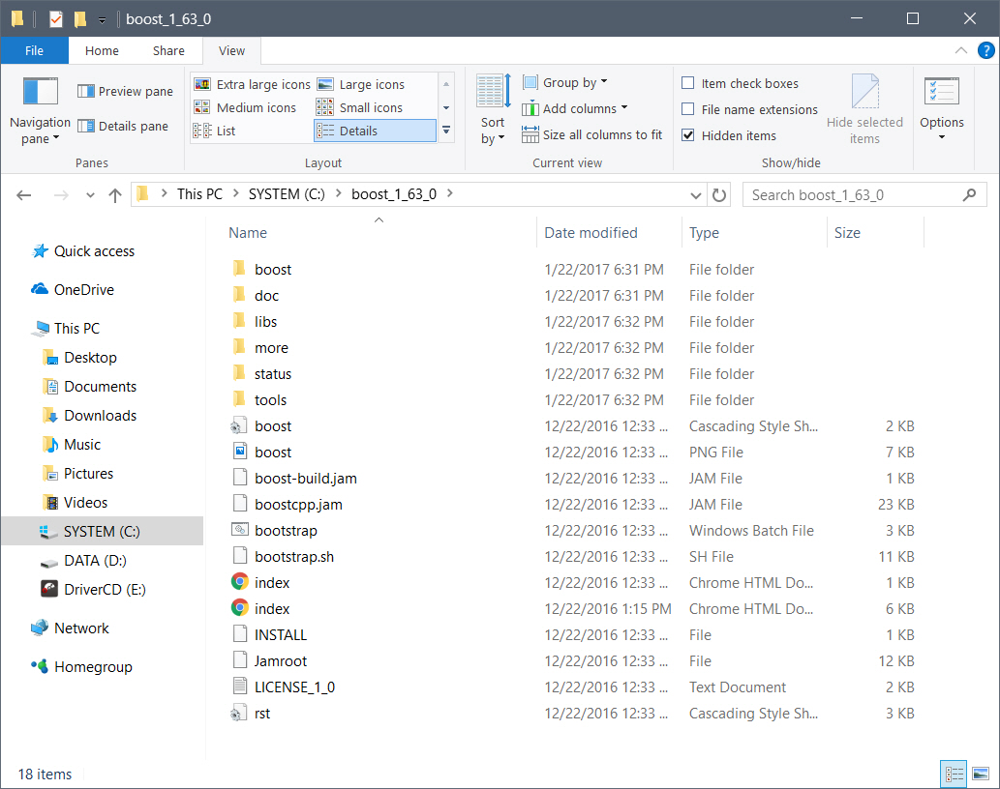
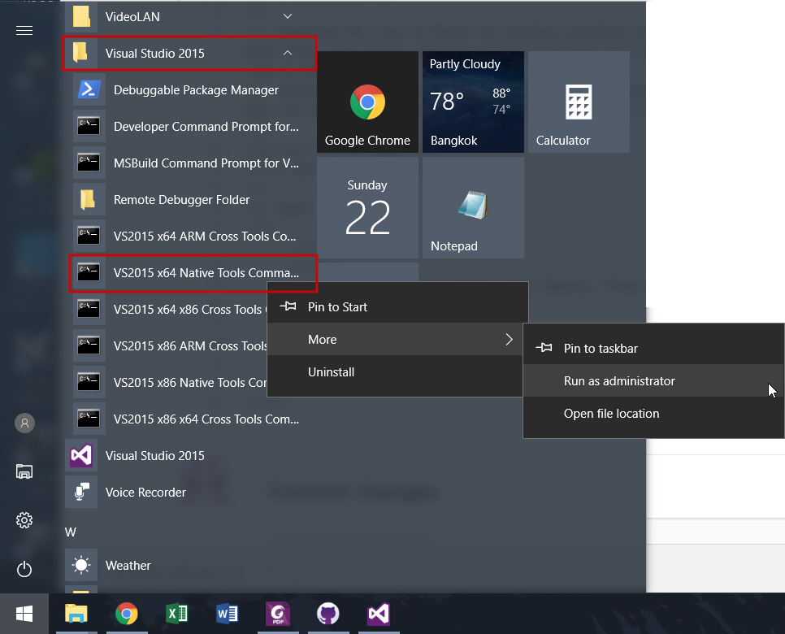
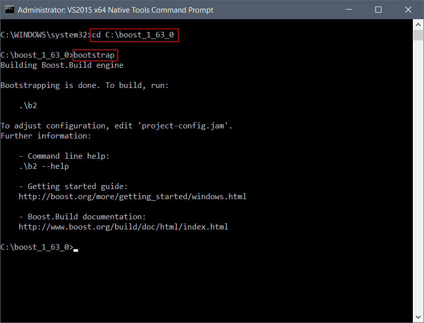
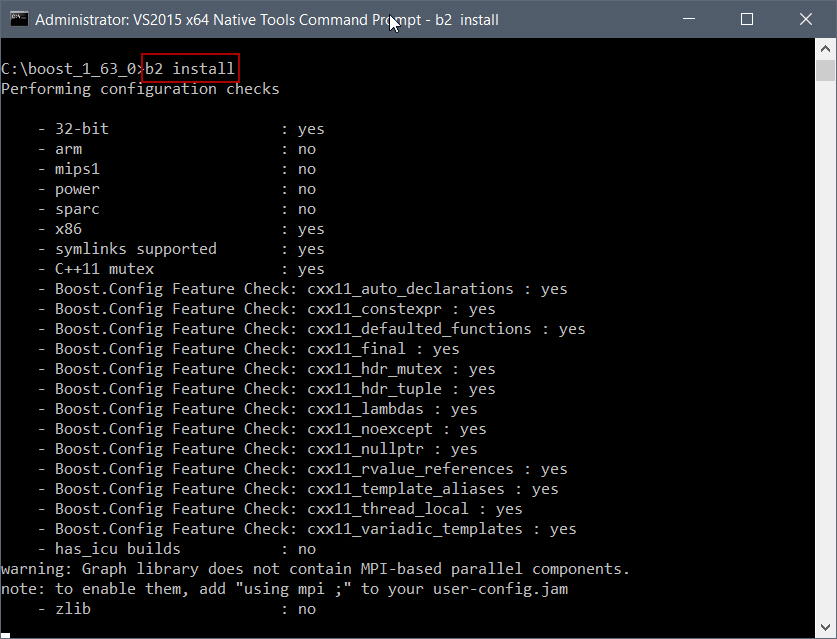

Boost Installation Instructions for Visual Studio 2015
The instructions mainly follow the Boost's official guide for Windows. The current version of Boost (as of Jan 22, 17) is 1.63.0.
1. Get Boost
- Download the copy of Boost for Windows platform via http://www.boost.org/users/history/version_1_63_0.html. Either .7z or .zip is fine.
- Extract the archive file to your directory of choice. For this example I chose to extract to "C:/boost_1_63_0". In the folder you will see plenty of files including "bootstrap.bat".

2. Run bootstrap.bat
- Click the Windows button on the bottom left of the desktop screen and search for "Visual Studio 2015" folder.
- Start Visual Studio's command prompt. Now it depends on which OS version you have. For this example, since my OS is 64-bit Windows, the command prompt I need to run is "VS2015 x64 Native Tools Command Prompt". If your OS is 32-bit Windows, then "VS2015 x86 Native Tools Command Prompt". IMPORTANT: need to run the command prompt as administrator.

- Change directory to the Boost folder using command "cd". For this example "cd C:\boost_1_63_0", then run "bootstrap".
(See the following pic for the expected result)

3. Build Boost by b2
- Under the previous command prompt, run a command "b2 install". The default installation directory is C:\Boost.
If you want to choose the directory of your choice, run "b2 install --prefix=PREFIX" where PREFIX indicates the path you want to install the Boost. For example, " b2 install --prefix="C:\MyBoost64\" ".
For this example I use the default command.
(See the following pic for the expected result)
